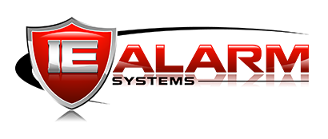

IE Alarm can move from Sedona rigidity to a cleaner quote-to-cash operating system.
The evaluation is not just software replacement. It is a chance to support sales growth, modern field execution, project visibility, inventory control, invoice correction, and a better long-term partner model.
A local Inland Empire commercial alarm company with complex job operations and a reputation built on service.
Commercial security specialist
IE Alarm serves the Inland Empire from Riverside, offering access control, fire and life safety, intercom, intrusion, camera, and related commercial security services.
Local expertise and monitoring
The site positions IE Alarm around advanced commercial security technologies, personalized service, and 24/7 UL listed monitoring.
Government-heavy project work
Discovery notes describe a security integrator with roughly 90% government work and projects ranging from one-day installs to multi-month engagements.
Sales growth raises the cost of staying inside a rigid back-office system.
IE Alarm is working to add 2-3 salespeople and shift from a historically word-of-mouth operating model toward more active go-to-market motion. Sedona has been useful, but the evaluation surfaced friction where growth needs flexibility.
Sales process modernization
QuoteWorks and DocuSign support the front end today, while Rev.io demonstrated native quoting, proposal templates, e-signature, and quote status tracking inside one workflow.
Field experience gap
IE Alarm called out poor experience with Sedona X after an older mobile tool gave way to a new app that did not meet expectations.
Partner risk after acquisition
Support quality was noted as declining after Sedona's acquisition by the Bolt Group, turning partnership confidence into part of the buying decision.
The strategic shift is clear: IE Alarm is deciding whether its next phase of growth should run on patched-together tools or one connected Rev.io workflow from quote to cash.
The pain is concentrated where mistakes, mobility, and job complexity meet.
Sedona is unforgiving when work changes
- IE Alarm asked specifically about invoice correction when parts or labor are wrong.
- Current process can require credits, inventory reversal, change orders, and new invoices.
- Rev.io needs to validate invoice reversal behavior and downstream ticket/project effects.
Mobile experience is a business issue
- Sedona X was described as a poor rollout and a frustrating field experience.
- Rev.io's mobile app, offline caching, GPS, time tracking, ticket updates, and field workflow should be demo focal points.
Projects span very different job sizes
- IE Alarm handles one-day installs and projects that can last months or longer.
- They need jobs, tickets, project phases, tasks, scheduling, job costing, budgeting, and actuals visibility.
Tool sprawl around sales documents
- QuoteWorks handles quoting today.
- DocuSign handles signatures today.
- Rev.io can consolidate proposal templates, fillable fields, signatures, quote status, approved service activation, and ticket creation.
Rev.io's case is fewer systems, fewer correction loops, and a stronger operating foundation for growth.
Operational efficiency
If invoice corrections, quote handoffs, signature routing, and ticket creation each remove small manual steps, the impact compounds across government projects and service work.
Sales ramp control
As IE Alarm hires additional salespeople, standardized quote macros, proposal templates, manager notifications, and pipeline visibility reduce reliance on tribal knowledge.
Field productivity
Mobile ticket access, offline caching, time capture, and GPS can reduce field friction, especially when technicians work in areas with unreliable signal or complex site work.
Lower partner risk
Rev.io's value is partly product capability and partly a relationship reset: US-based support, ongoing product development, and a migration team that understands Sedona displacement is real work.
Assumptions to validate: monthly invoice correction volume, correction time per incident, QuoteWorks/DocuSign license costs, number of field technicians, average jobs per month, and current Sedona renewal or server-upgrade timing.
The next demo should prove Rev.io across the exact workflows IE Alarm runs today.
Systems to replace or reduce
- Sedona as the main back-office platform.
- QuoteWorks for front-end quoting.
- DocuSign for signatures, if Rev.io e-signature meets requirements.
Systems to integrate or confirm
- QuickBooks accounting remains in scope.
- Notes conflict on QBO versus on-prem QuickBooks; confirm exact version and data flow.
- Confirm inventory and financial posting expectations.
Sales and proposal workflow
- Opportunity pipeline and rep/admin visibility.
- Quote categories or sections by area/address.
- Quote macros, central price adjustments, proposals, e-signature, and quote status tracking.
Project and service execution
- Tickets as the main vehicle for client interactions.
- Projects for longer installs with budgets, timelines, phases, and tasks.
- Parts and labor from approved quotes flowing into tickets.
Inventory and purchasing
- Inventory reservation by job.
- PO creation from ticket line items.
- Receiving, serial tracking, specific costing, warehouses, vehicles, and site deployment without sale.
Feature timing to clarify
- Labor units per inventory item is not available yet.
- Tony to follow up on the development timeline.
- Current workaround uses separate labor products and time logging.
Turn the demo into a structured Sedona migration evaluation with Thomas and Richard.
Bryan sends pricing, demo recap, and Rev.io feature overview. Tony confirms the labor-unit-per-inventory-item roadmap and validates invoice reversal behavior after the call.
Thomas and Richard complete the initial platform evaluation against IE Alarm's core workflows: quoting, projects, service tickets, mobile field work, inventory, purchasing, accounting handoff, and invoice correction.
Run the follow-up demo with Tony focused on Sedona displacement: quote-to-ticket flow, project budgets, inventory/POs, mobile/offline field workflow, QuickBooks integration, customer relationships, and proposal/e-signature.
If the workflow fit and pricing make sense, define the migration plan from nine years of Sedona data into Rev.io, including what data must move, what can archive, implementation timeline, and buyer-side owners.